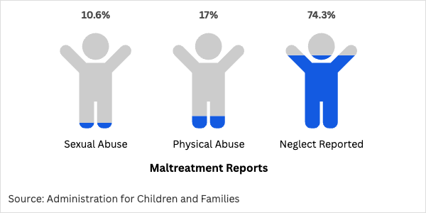

Please select one of the following options on the circles. You will have the option to read different scenarios and take different paths about a child entering the welfare system.
Central intake must decide whether they should accept a call about a child's welfare.
Call is screened OUT
In California, Child Welfare Services (CWS) uses risk assessment tools, like Structured Decision Making (SDM), to evaluate the likelihood of abuse or neglect. A screened out call indicates a low likelihood of abuse or neglect.
No investigation initiated and no further involvement by CWS for this particular call

This path has reached a conclusion. The child may interact again with child welfare, but at this stage they are unlikely to continue with the government and remain with their guardians.
Please select a different route by backtracking to the previous circle.
When a child's case is screened, that means a social worker has identified enough flags to raise concerns for the wellbeing of the child. Factors that could warrant a case to be screened into the system include: concerns about a child seat available in a vehicle.
In California, child neglect, as defined by state law and CWS, is the negligent failure of a parent, guardian, or caretaker to provide adequate care, including food, clothing, shelter, medical care, and supervision, when a child's health or welfare is threatened. This definition includes both general neglect, where no physical injury has occurred, and severe neglect, where the child's health is endangered.
Screenings for neglect are subjective and depends on the case worker how they interpret the definition. Some examples of reported neglect are: not having a car seat for baby at time of birth, school truancy, ...
CPS begins investigating the validity of the claims made:
Insufficient evidence means…
dead end.
sufficient means…
subject AF
Risk assessment of claims is conducted:
Low risk means…
dead end
In the most recent Child Maltreatment Report, neglect accounted for the vast majority of child maltreatment reports nationally. Specifically, 74.3% of victims were reported as being neglected, compared to 17% for physical abuse and 10.6% for sexual abuse.
Evaluation of continued future risk
No risk means…
dead end
Expected risk means…
Court petition is filed for the removal of child from their parents:
Dismissed means…
dead end
Accepted but…
dead end
Low risk means…
Child is placed in the care of the state, they are sent to:
Foster Youth center is…
dead end
A foster family receives money
gasp
CPS determines whether child can return to parents
Remaining in foster care means…
dead end
Returning to family means…
dead end
Termination means…
oh no
Parents rights have been terminated. The child is removed from the family and…
Ward means…
dead end
Adoption means…
dead end
Guardian ship means…
dead end